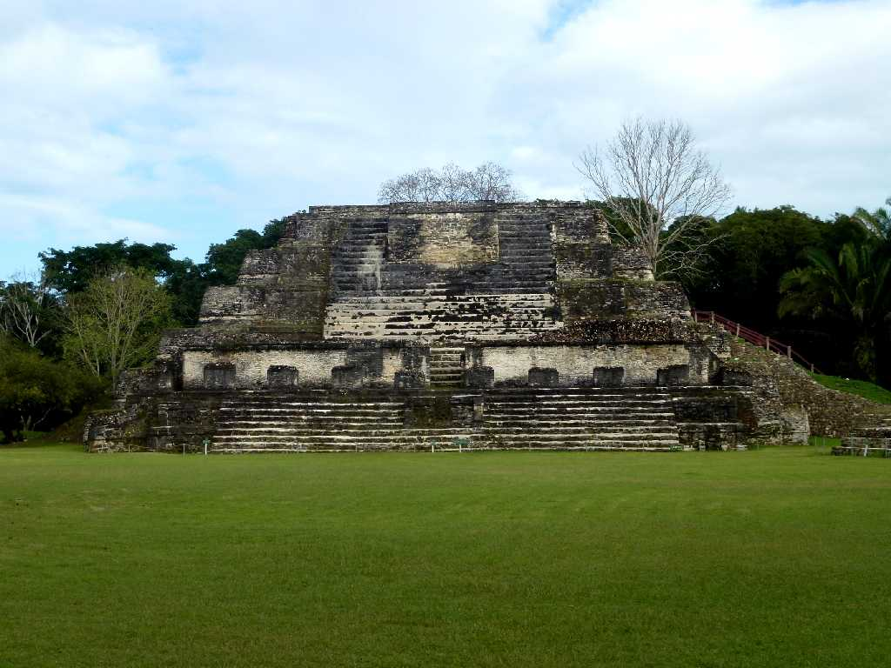
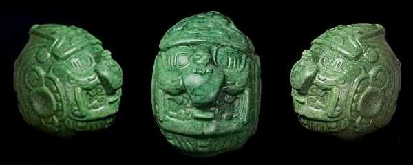
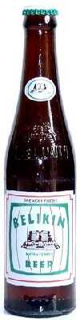
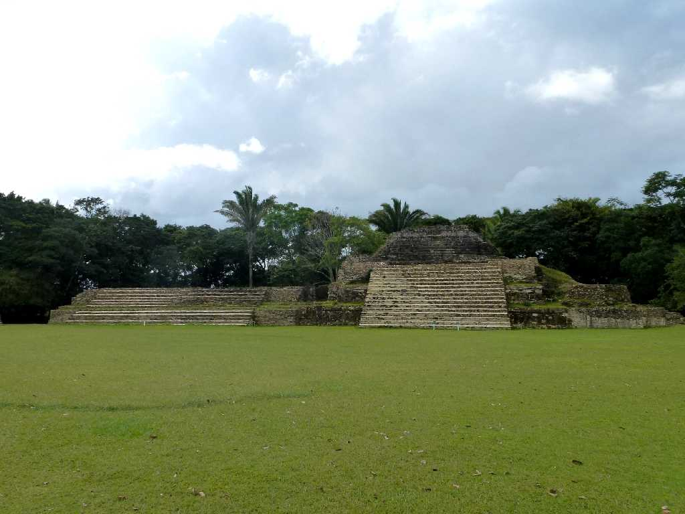
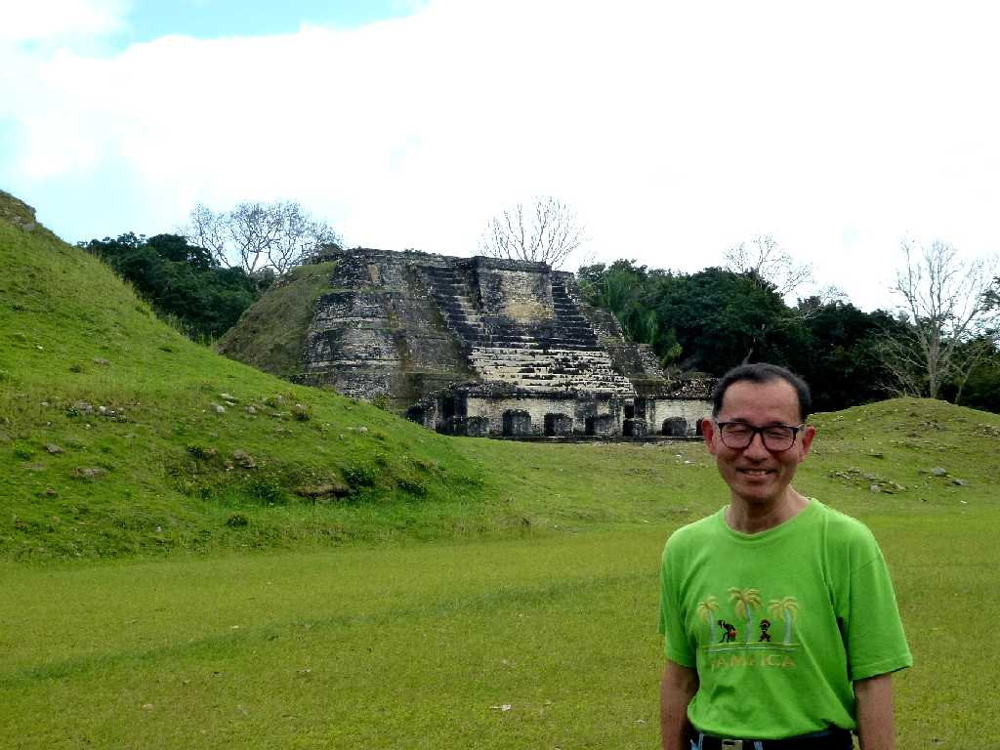
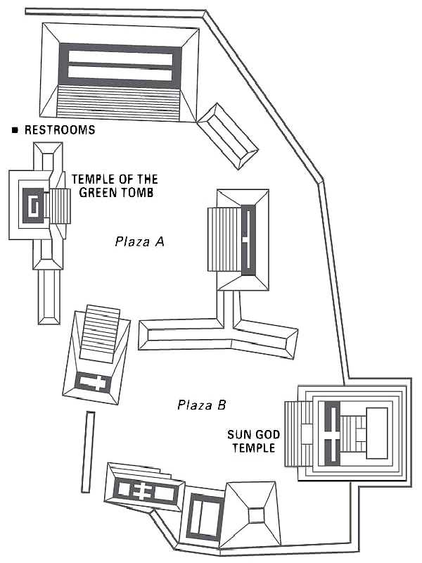

Sun God Temple Plaza B Altun Ha
アルトゥンハはマヤ古典期(AD600-900)に海上交易の拠点として栄えた都市遺跡でベリーズビールのシンボルとなっている高さ１８ｍの太陽神殿(ジャガー神殿)には４.4kgの太陽神のヒスイの頭部像が安置されている

Head Statue Jade

Belikin beer label

Green Tomb Plaza A Altun Ha
遺跡の広場にあるマヤ古典期前期の５５０年頃創られた緑の墓

January 26 2013 Altun Ha
